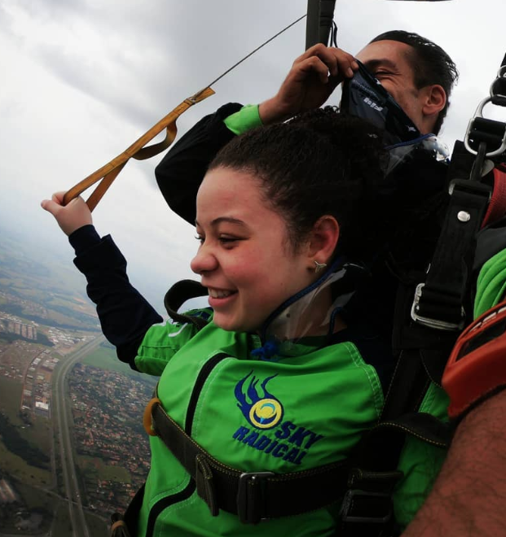

Duda Rodrigues
Conheça o meu mundo!
Conheça um pouco sobre mim!!
Me chamo Maria Eduarda Rodrigues Marcelino, nasci no dia 25 de setembro
de 2006, minha naturalidade é em São Paulo –Sepaco: Vila mariana,
atualmente tenho 16 anos, estou morando em Diadema.
Sou dançarina, escritora, cronista, estou no segundo ano do ensino médio na
escola Sesi Diadema. Estou cursando Desenvolvimento de sistemas no Senai
Manuel Garcia filho, em diadema. Estou fazendo curso de inglês no CNA em
Diadema.
Já escrevi várias histórias, uma delas é a minha bibliografia que contém umas
15 páginas do Word, outra é uma história baseada em fatos reais em que eu já
elaborei uma peça de teatro sobre ela, que se chama: “relatos da vida de uma
adolescente”. Sem contar de várias crônicas que eu já venho realizado.
Lá no quintal da minha casa, mora várias pessoas, no terreno há 6 casas e lá
moram minha família, minha vó, minhas tias, meus primos e primas, meu
cunhado e minha irmã.
Já pensei em ser várias coisas em relação sobre profissões. Já passou em
minha mente em ser veterinária, caixa de mercado, professora, policial federal,
delegada federal. Agora que estou cursando Desenvolvimento de Sistemas no
Senai, mudou totalmente os planos e hoje penso que talvez irei fazer alguma
coisa relacionada a tecnologia da informação. Porém, estou pensando em ser
pediatra, pois eu amo crianças e seria um diferencial estar na área da
medicina.
Futuramente, irei estudar fora do Brasil, pois meu primo mora na Irlanda e eu irei morar
com ele e aproveitar para estudar e ter um autoconhecimento para me manter
lá no exterior.
 |
 |
 |
|